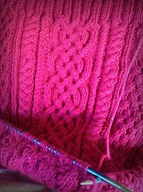

 In 2018, I tried to knit my very own homemade sweater. Prior to this, I had been knitting for three years, but I never made anything more advanced than a scarf. I wanted to challenge myself. However, I didn't want to make just any sweater, Therefore, I began my research on the types of sweaters out there. I found patterns such as Rib, Stockinette, Aran, and HoneyComb. Having high expectations for myself, I wanted to make the best sweater ever. Thus, leading my decision to make the Aran Sweater. Soon enough, my dream to make a sweater would become a reality.
Believe it or not, my first sweater was not successful. Looking at the picture, it seems beyond perfect with the complex patterns combining. However, if one were to look closely they could see that here and there, there are mistakes in the pattern. I got frustrated and ripped my project off the knitting needles. I took a break from knitting for three months. After this, I got serious and told myself I would take my time in making the sweater. I decided to use my whole summer to make it. Therefore, I would have the time to give it my full attention. By the end of the summer, I accomplished my goal, I had my very first homemade sweater. Honestly, the hardest part was sewing it together.
After completing my first (second) sweater, I am obsessed with knitting them. I've completely dedicated my knitting to sweaters only. Since I've started college, I have not had the time I've wanted to sit down and knit for hours, but that doesn't mean I don't have any ideas in my head. All of my research has made me develop the skill to create my patterns in my mind. I plan to buy an empty journal to write them down. Knitting sweaters have become a second life for me.
Fun fact: I wore my sweater to school one day and no one believed I made it myself until I showed them the video footage and photos. People look at me crazy when I tell them I don't sell my creations. Some tings are just meant for the soul.